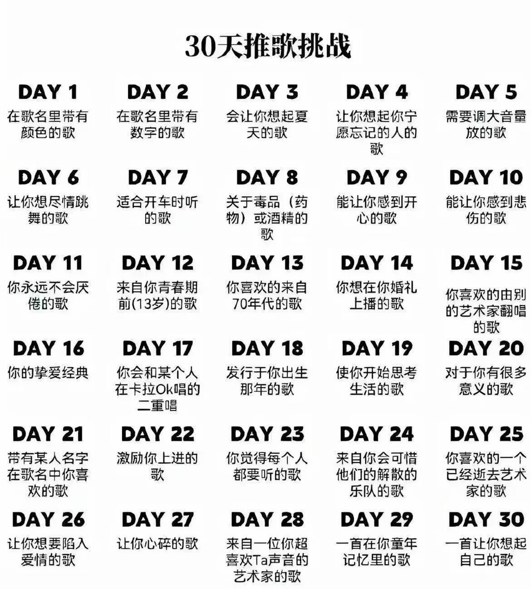
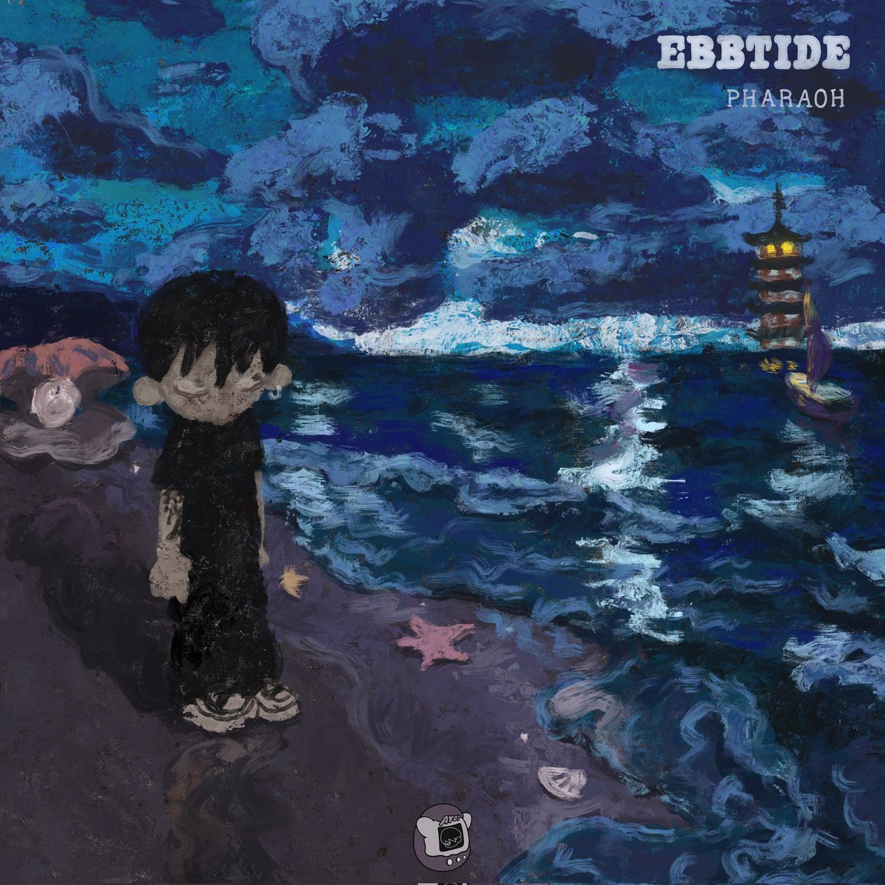

孤独症患者
@NMD_2012
DAY8:镜花水月
反对毒品的应该也是关于毒品的歌吧🤔
被收录于专辑《退潮》，这首歌是法老写给何力的，何力曾是对法老帮助非常大的一位朋友，后来因失恋堕落至贩毒而死。导致了法老对毒品的痛恨，何力也成为他的禁毒标志，活死人反毒理念源头
歌词塑造了三个角色分别是“她”“他”和“我”，“她”就是毒品对人的诱惑，歌中的女声部分唱得是极具诱惑性的，让人听着会很像一首情歌🤤，但真正了解过后才能明白这种诱惑性其实是人对于毒品的依赖。“他”就是何力，歌中通过一段由短句组成的一段快嘴完美地模拟了吸毒成瘾者毒瘾发作时疯癫的状态，“fuck you法老”这句词说明何力为了追求那种美好背弃了现实，甚至在攻击那个曾经与他关系很好，现在想要劝说他的法老，看出他丧失了理智，对毒品已经到了极度痴迷的程度。“我”当然就是法老本人，他不情愿看着曾经把他从深渊中拉出的朋友一步步落入深渊，苦口婆心地劝说却始终没有效果，最后只能看着他一步步堕落直至死去。歌中有一个细节：开头是点火声，结尾是咳嗽声，做到了前后呼应，也能说明这首歌禁毒的主题
这真的是一首很有深度的歌，难道你以为词写的号歌就难听了吗，镜花水月好听好听好好听听好听好听🤤太燥了这首歌后边段我直接跪着听😭支不支持系度的都可以听，主人快去听一听吧，我什么都会做的😭

